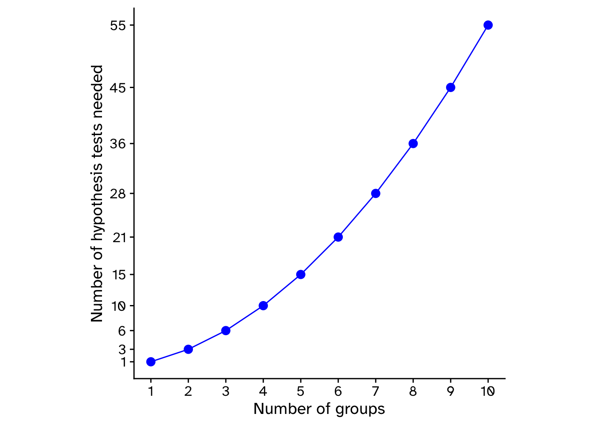
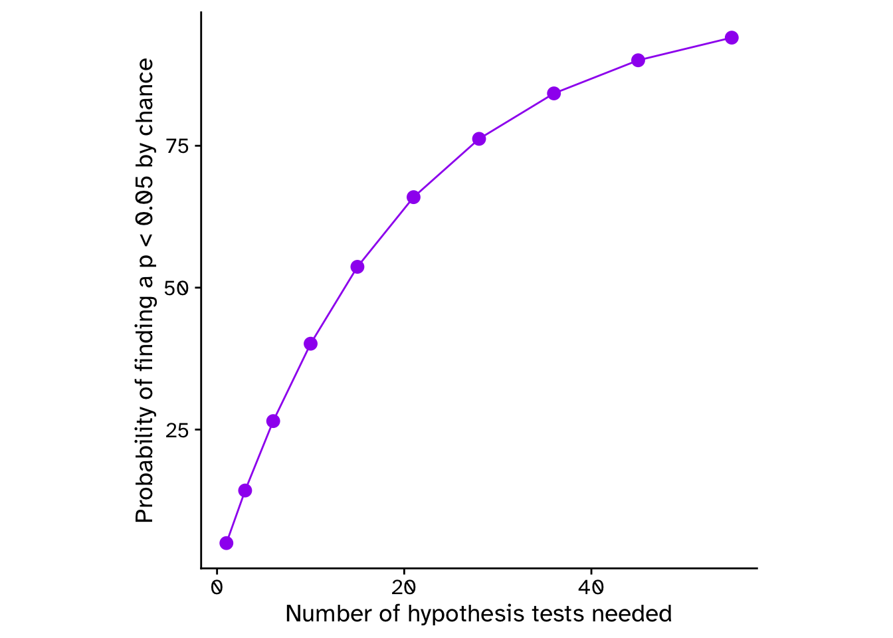
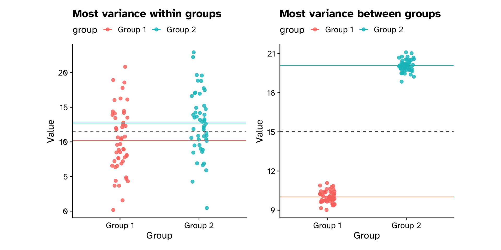

triangular_numbers <-tibble(n =1:10,triangular = n * (n +1) /2)triangular_numbers |>ggplot(aes(x = n, y = triangular)) +geom_point(size =3, color ="blue") +geom_line(color ="blue") +scale_x_continuous(breaks =c(triangular_numbers$n)) +scale_y_continuous(breaks =c(triangular_numbers$triangular)) +labs(x ="Number of groups", y ="Number of hypothesis tests needed")

Comparing means between groups
Why not just do pairwise comparisons of means?
p_values <-tibble(n = triangular_numbers$triangular,prob_significant_result =100* (1-0.95^n))p_values |>ggplot(aes(x = n, y = prob_significant_result)) +geom_point(size =3, color ="purple") +geom_line(color ="purple") +labs(x ="Number of hypothesis tests needed",y ="Probability of finding a p < 0.05 by chance" )

Comparing means between groups
Analysis of Variance (ANOVA)
Null hypothesis
The means of all groups are the same
Mean A == Mean B == Mean C
Alternative hypothesis
The means of at least one group differ from the global mean
F-statistic
The ratio of variances
\[
F = \frac{\text{Variance 1}}{\text{Variance 2}}
\]
Can (in general) be used to test if the variances are equal between sources of variance
\(F=1\) if variances are equal
\(F\) is very low if variance 1 < variance 2
\(F\) is very high if variance 1 > variance 2
F-statistic
The ratio of between-group variance to within-group variance
\[
F = \frac{\text{Between-group variance}}{\text{Within-group variance}}
\]
\[
F = \frac{\text{Between-treatment variance}}{\text{Within-treatment variance}}
\]
\[
F = \frac{\text{Explained variance}}{\text{Unexplained variance}}
\]
\[
F = \frac{\text{Explained variance}}{\text{Residual variance}}
\]
\[
F = \frac{\text{Explained}}{\text{Error}}
\]
F-statistic
The ratio of between-group variance to within-group variance
set.seed(123)# Generate a dataset with majority of variance within groupsdata_within_variance <-tibble(group =rep(c("Group 1", "Group 2"), each =50),value =c(rnorm(50, mean =10, sd =5), # High within-group variancernorm(50, mean =12, sd =5) ))means <- data_within_variance |>group_by(group) |>summarise(group_mean =mean(value)) |>mutate(overall_mean =mean(group_mean))# Visualize the datasetwithin_plot <- data_within_variance |>ggplot(aes(x = group, y = value, colour = group)) +geom_jitter(size =2, alpha =0.8, width =0.1) +geom_hline(data = means,aes(yintercept = group_mean, colour = group),linetype ="solid" ) +geom_hline(data = means,aes(yintercept = overall_mean),linetype ="dashed" ) +labs(x ="Group", y ="Value", title ="Most variance within groups") +theme(legend.position ="top")set.seed(123)# Generate a dataset with majority of variance within groupsdata_within_variance <-tibble(group =rep(c("Group 1", "Group 2"), each =50),value =c(rnorm(50, mean =10, sd =0.5), # High within-group variancernorm(50, mean =20, sd =0.5) ))means <- data_within_variance |>group_by(group) |>summarise(group_mean =mean(value)) |>mutate(overall_mean =mean(group_mean))# Visualize the datasetbetween_plot <- data_within_variance |>ggplot(aes(x = group, y = value, colour = group)) +geom_jitter(size =2, alpha =0.8, width =0.1) +geom_hline(data = means,aes(yintercept = group_mean, colour = group),linetype ="solid" ) +geom_hline(data = means,aes(yintercept = overall_mean),linetype ="dashed" ) +labs(x ="Group", y ="Value", title ="Most variance between groups") +theme(legend.position ="top")within_plot + between_plot

Comparing means between groups
Analysis of Variance (ANOVA)
\[
F = \frac{\text{Mean variance between-group}}{\text{Mean variance within-group}}
\]
If \(F\) is very big, more likely that means are different